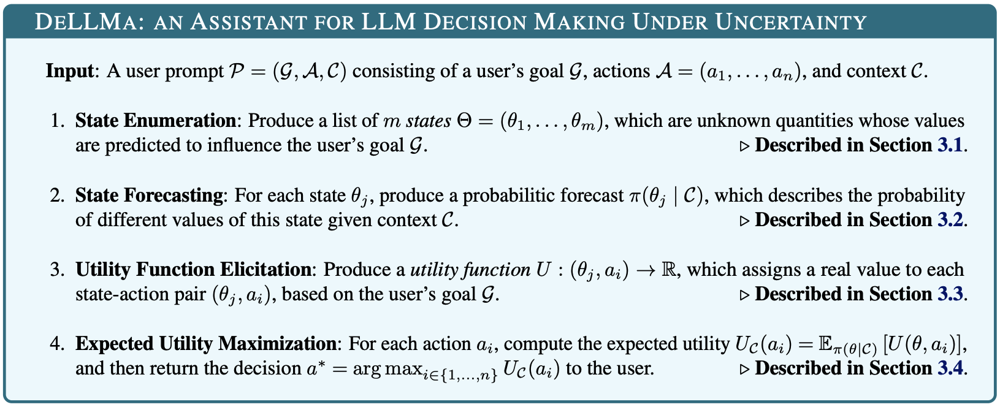
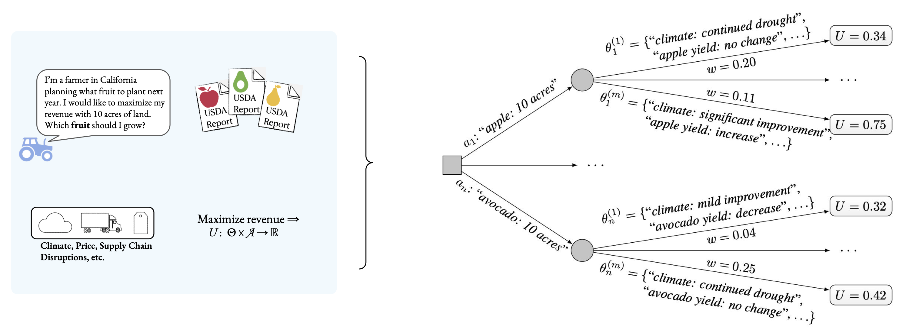

Classical decision theory has helped humans make rational decisions for decades. Can it do the same for Large Language Models (LLMs)? DeLLMa (pronouced dilemma) is a Decision-making Large Language Model assistant, which utilizes the power of Large Language Models and Classical Decision Theory to help LLMs make decisions under uncertainty.

Abstract
The potential of large language models (LLMs) as decision support tools is increasingly being explored in fields such as business, engineering, and medicine, which often face challenging tasks of decision-making under uncertainty. In this paper, we show that directly prompting LLMs on these types of decision-making problems can yield poor results, especially as the problem complexity increases. To aid in these tasks, we propose DeLLMa (Decision-making Large Language Model assistant), a framework designed to enhance decision-making accuracy in uncertain environments. DeLLMa involves a multi-step reasoning procedure that integrates recent best practices in scaling inference-time reasoning, drawing upon principles from decision theory and utility theory, to provide an accurate and human-auditable decision-making process. We validate our procedure on multiple realistic decision-making environments, demonstrating that DeLLMa can consistently enhance the decision-making performance of leading language models, and achieve up to a 40% increase in accuracy over competing methods. Additionally, we show how performance improves when scaling compute at test time, and carry out human evaluations to benchmark components of DeLLMa.
Project Overview
Given a decision query from a user, our framework DeLLMa (Decision-making LLM assistant) aims to perform accurate decision making under uncertainty via inference-time reasoning methods.
DeLLMa consists of four main steps:
- Identify relevant unknown states based on the problem description and user goals.
- Forecast the values of the unknown states given in-context information.
- Elicit a utility function that aligns with the user’s goals.
- Use this utility function to identify the decision that maximizes expected utility.
We show the full DeLLMa algorithm below:

We can illustrate the decision tree used internally by DeLLMa for decision making under uncertainty. In the following figure, we show this decision tree for our agriculture planning environment (described below). DeLLMa uses these types of decision trees to compute and maximize the expected utility of each available action.

Some Experimental Results
We illustrate DeLLMa below on two decision making under uncertainty problems: agriculture planning (Agriculture) and finance investing (Stocks). Both problems involve sizable degrees of uncertainty from diverse sources, and are representative of different data modalities (natural language and tabular) involved in decision making
First, we show results on the Agriculture environment. We collect bi-annual reports published by the United States Department of Agriculture (USDA) that provide analysis of supply-and-demand conditions in the U.S. fruit markets. To emulate real-life farming timelines, we use the report published in September 2021 as context for planning the forthcoming agricultural year. We additionally supplement these natural language contexts with USDA issued price and yield statistics in California.
We define the utility of planting a fruit as its price × yield reported in the forthcoming year. We identify 7 fruits — apple, avocado, grape, grapefruit, lemon, peach, and pear— that are both studied in the September 2021 report, and endowed with these statistics in 2021 and 2022. We create decision making problems by enumerating all possible combinations of availble fruits. For each decision-making instance, we use related sections of the USDA report and current-year price and yield statistics as context. In the figure below, we show that all DeLLMa variants outperform baseline methods; DeLLMa-Pairs is the best, followed by Top1 and Naive. This result implies that the full ranking of state-action pairs is useful for utility elicitation.

Next, results on the Stocks environment. The action space A is limited to combinations of 7 stocks: AMD, DIS, GME, GOOGL, META, NVDA and SPY. Unlike agriculture data where the context C are collected through USDA reports, we collect historical stock prices as the context for this problem. Each stock is presented with 24 monthly price in history. In preventing possible data leakage and promoting LLMs to use their common-sense knowledge in making decisions, when using gpt4-1106-preview as the LLM checkpoint, historical price between December 2021 to November 2023 are provided as the context C. These historical monthly prices are collected via Yahoo Finance by the authors.
The goal of the LLM agent is to choose which stock to invest on 2023-12-01 and sell on the last trading day of that month (2023-12-29) so that the return is maximized. In the figure below, we show that on average, DeLLMa-Top1 outperforms all baselines. DeLLMa-Pairs is slightly worse than its Top1 counterpart, meaning that ranking state-action pairs is still a challenging task.

BibTeX
@misc{liu2024dellma,
title={{D}e{L}{L}{M}a: {D}ecision {M}aking {U}nder {U}ncertainty with {L}arge {L}anguage {M}odels},
author={Ollie Liu$^*$ and Deqing Fu$^*$ and Dani Yogatama and Willie Neiswanger},
year={2024},
eprint={2402.02392},
archivePrefix={arXiv},
primaryClass={cs.AI}
}